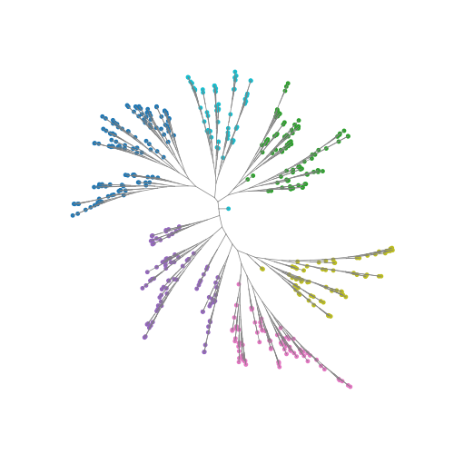

Quickstart¶
Everything runs on the simulators in bonsai_rs.datasets, so every answer
checks against the generating tree. Printed numbers are real output.
From raw counts¶
bonsai_from_counts runs Sanity, converts the posteriors and runs the search,
all in Rust.
import bonsai_rs as bs
sim = bs.datasets.simulate_counts(256, 500, seed=0) # cells x genes, int64
res = bs.bonsai_from_counts(sim.counts, cell_totals=sim.cell_totals)
res.tree.n_leaves, res.tree.n_nodes # (256, 511)
len(res.features), len(res.dropped) # (462, 11)
bs.robinson_foulds(res.tree, sim.tree) # 0
counts is cells x genes, dense integer or any scipy sparse. cell_totals is
each cell's UMI total over all genes. Leave it out and the row sums are
used, which is only right when counts holds every gene. Subset to HVGs first?
Pass the full-matrix totals.
Sanity can run on the GPU via wgpu (Metal on macOS, Vulkan or DX12 elsewhere). The wheel ships the GPU code; whether there's an adapter is checked at runtime:
bs.gpu_available() # True
res = bs.bonsai_from_counts(sim.counts, cell_totals=sim.cell_totals, gpu=True)
bs.robinson_foulds(res.tree, sim.tree) # 0
Only Sanity moves, in float32 whatever dtype says; the search stays on the
CPU. gpu=True without an adapter raises BonsaiError, no silent fallback.
res.dropped and res.features are column indices into counts: genes the
conversion refused and genes the search used. The
guide says why genes get dropped.
res.steps shows what each stage bought:
1-2 linkage -75784.5 0.0
3 polytomy -75784.5 0.0
4 branch -27494.3 48290.2
5 spr -27494.3 0.0
6 nni -27494.3 0.0
7 branch -27494.3 0.0
8 collapse -27494.3 0.0
Zero gain is fine. Negative gain is a bug; please report it.
One step at a time¶
Same thing, keeping the Sanity output:
post = bs.sanity(sim.counts, cell_totals=sim.cell_totals)
lik = bs.from_sanity(post.log_fold_changes, post.error_bars, post.variance)
res = bs.bonsai(lik.means, lik.sds, variances=lik.variances)
Identical tree and loglikelihood. post.log_transcription_quotients is a
normalised expression matrix for anything else; don't feed it to from_sanity
(see the guide).
From your own means and error bars¶
Any per-cell per-feature measurement with a standard deviation works.
d = bs.datasets.simulate(512, 200, kind="unbalanced", seed=3)
res = bs.bonsai(d.means, d.sds)
bs.robinson_foulds(res.tree, d.tree) # 2, of a possible 1018
variances is optional; without it it's estimated from the data (SI eq. S9).
Storage follows the input: float32 in stays float32, reductions are always
float64.
Drawing it¶
layout gives node coordinates; edges run node to parent. Bring your own
matplotlib.
import matplotlib.pyplot as plt
import numpy as np
xy = bs.layout(res.tree) # equal daylight, the default
clusters = bs.cluster(res.tree, 6)
child = np.flatnonzero(res.tree.parent >= 0)
parent = res.tree.parent[child]
n = res.tree.n_leaves
fig, ax = plt.subplots(figsize=(5, 5))
ax.plot(
np.stack([xy[child, 0], xy[parent, 0]]),
np.stack([xy[child, 1], xy[parent, 1]]),
color="grey",
lw=0.5,
)
ax.scatter(xy[:n, 0], xy[:n, 1], c=clusters.leaf_cluster, s=6, cmap="tab10")
ax.set_aspect("equal")
ax.axis("off")

kind="angle" is the cruder, faster radial layout, kind="dendrogram" the
classic. hyperbolic=True projects onto the Poincare disk to give crowded outer
branches room.
Getting the tree out¶
read_newick numbers leaves by appearance; map back with the returned labels.
tree_distances(res.tree) gives the full leaf-by-leaf path distances; pass
pairs to sample on anything large.